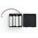

Things used in this project
Hardware components |
|
| Flic Smart Button Flic 2: The Perfect Button | |
| DC motor (generic) | |
| Audeme MOVI Arduino Shield | |
| Assembly Hardware, End Mounting Plates (Pair) | |

|
Nordic Semiconductor nRF52 Development Kit |
| Seeed Studio Grove starter kit plus for Intel Edison | |
|  | 4xAA battery holder |
Story
Abstract:
The bathroom is the most important place for people with mobility impairments, especially for those who have to engage in sports or any other hobbies that include increased usage of bathroom facilities. Thus, in regular bathrooms, the disadvantages include regular fixed sinks, inaccessible showers, and lack of proper support that lowers independence and comfort and thus affects the whole process of sports and hobbies. This report recommends the installation of sinks with height adjustments, fold-down seats for showers, and any other necessary precautionary measure like non-slip mats and bars for grabbing. These provisions shall afford comfort and safety for individuals with mobility impairment to manage personal hygiene tasks themselves and participate in preferred activities. Equally, it is by making bathroom settings accessible that there will be enhanced life quality and participation of individuals with various abilities.
________________________________________
Working:
1. System Components:
Adjustable Height Sinks:
• Mechanism: The height is manually or electrically adjusted to accommodate different users.
• Features: Easy-to-grasp surfaces, lever-operated faucets, and knee clearance for wheelchair users.
Fold-Down Shower Seating:
• Design: These seats will be wall-mounted and can be folded upwards when not in use.
• Material: The material used should be waterproof and of a nonslip nature for great safety and durability.
Safety Enhancements
Grab Bars: These should be strategically placed around sinks and showers for support purposes.
Non-Slip Mats: Place non-slip mats on the floors just for prevention against slipping, ensuring stability.
• Shower Controls: Accessible from a seated position, and as levers or buttons that are easy to turn or press.
Installation Components:
• Mounting Hardware: Anchors, bolts, and brackets to which the sinks and seats are attached.
• Plumbing Adjustments: Accommodate flexible hoses and adjustable plumbing fixtures in case changes in sink height are desired.
2. System Operation:
Installation Process:
1. Assessment: To determine proper places for both adjustable fixtures and safety enhancements, assess the pattern of the current bathroom layout.
2. Preparation: Prepare walls and floors for mounting hardware with secure attachment.
3. Installation:
o Adjustable Sinks: The sinks should be installed with mechanisms allowing height adjustment. Ensure ease of operability.
o Fold-Down Seats: The seats should be attached to the shower walls with the ability to bear the user's weight easily.
o Safety Features: Grab bars should be installed and non-slip mats placed at critical locations.
Application:
1. Adjustable Sinks:
o Operation: The user can adjust the height of the sink manually by an electric mechanism up or down to a preferred height.
o Application of Faucet: Turning on/off of water supply is easily manageable with lever-operated faucets.
2. Fold-Down Shower Seating:
o Deployment: Users lower the seat when needed and return it to the upward position for space saving.
o Stability: Ensure the seat is always secured when being used.
3 .
Safety Improvisations:
o Grab Bars: To assist users both in getting in and out of the shower and when using the sink.
o Non-Slip Mats: To ensure safety while developing slippery areas of the floor.
3. Product Development And Testing
Prototyping
1.
Design: Create prototypes of sinks and folding seats that are adjustable in nature. The accessibility and strength aspect needs great attention during this process.
2.
Material Selection: Select waterproof material, non-slippery, and easy to clean.
Testing:
1.
User Testing: The employment of people with mobility disabilities is done to test prototypes in real environments.
2.
Safety Testing: The verification that the installations are strong and stable enough to hold users up safely.
Iteration
1.
Refine: In design and functionality, take feedback from testing and make further refinements.
2.
Deploy in bathrooms and train about using them.
How to Use:
1._Setup:_à
Open Arduino IDE and connect Arduino to a computer.
Connect motor and buttons to the respective Arduino pins as per the wiring above.
2._Upload the Following Code:
o Copy the code in the Arduino IDE and upload it to the Arduino board.
3. Operation:
o The "up" button should be pressed for the sink to move upwards while the "down" button should be pressed to lower the sink.
o The motor should remain at stoppage when neither of the two buttons is pressed.
This report thus provides a comprehensive framework for improving bathroom accessibility by installing adjustable-height sinks, fold-down seating in showers, and other essential safety improvements. Such facilities would definitely make it easier for people with mobility impairments to take part in various sports and hobbies without any inhibitions, thus further enriching their lives.